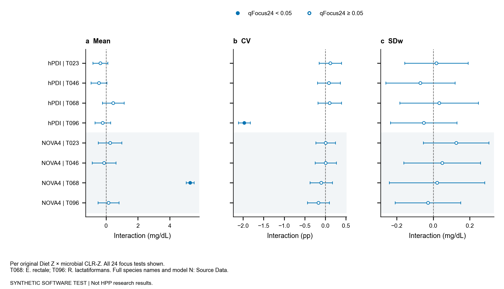
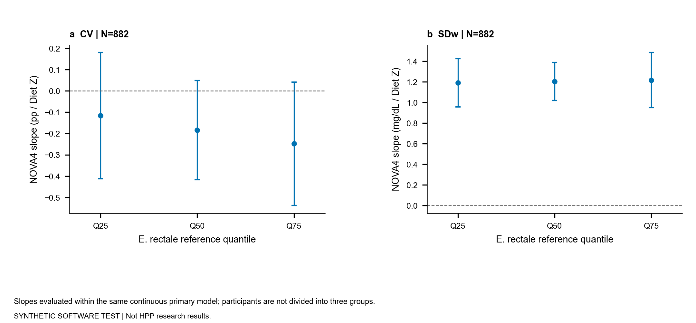
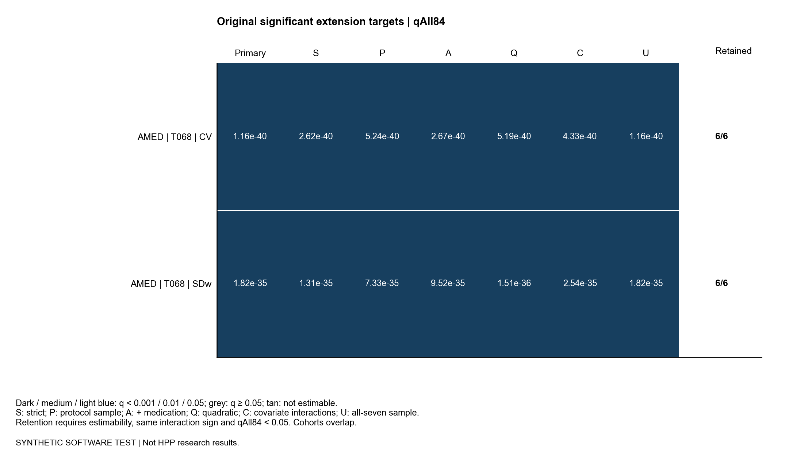
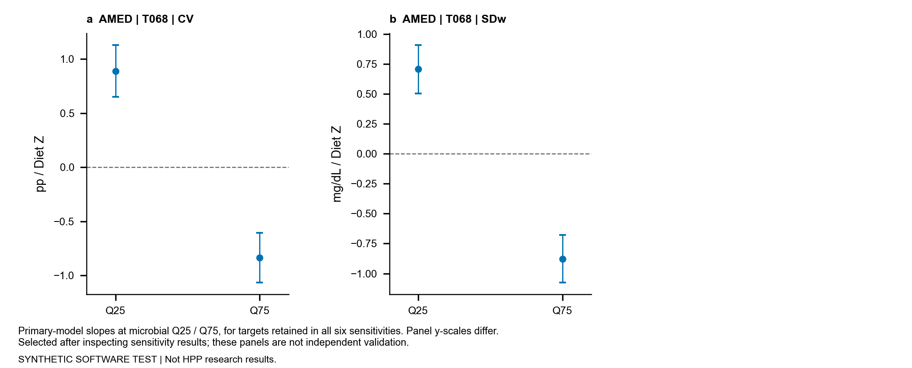
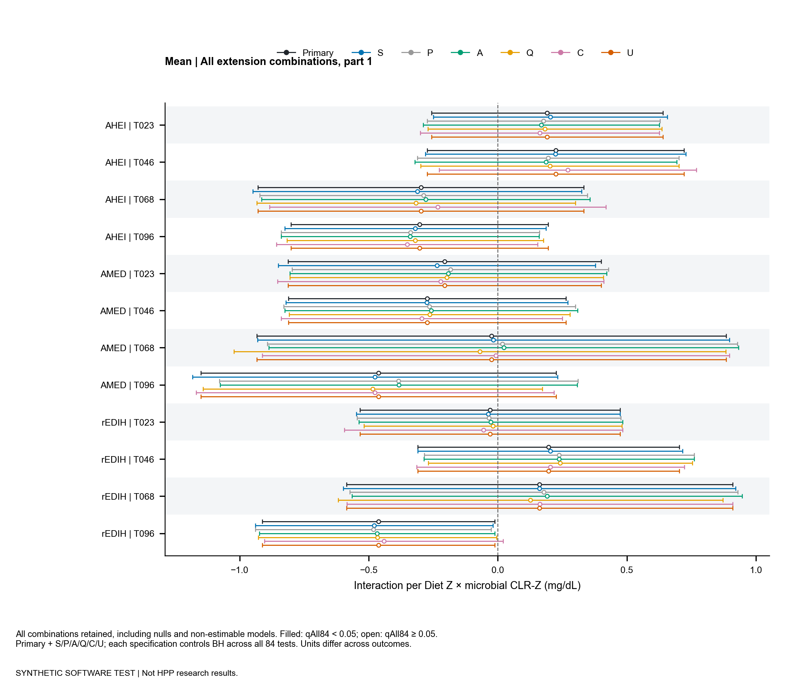
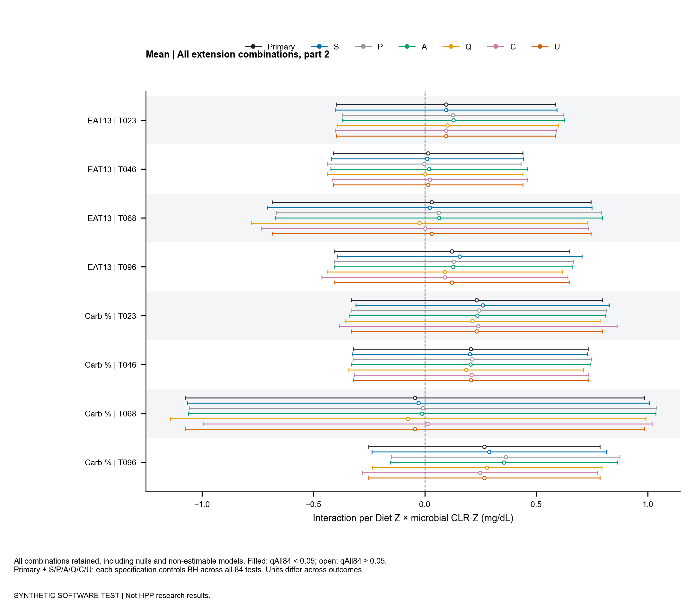
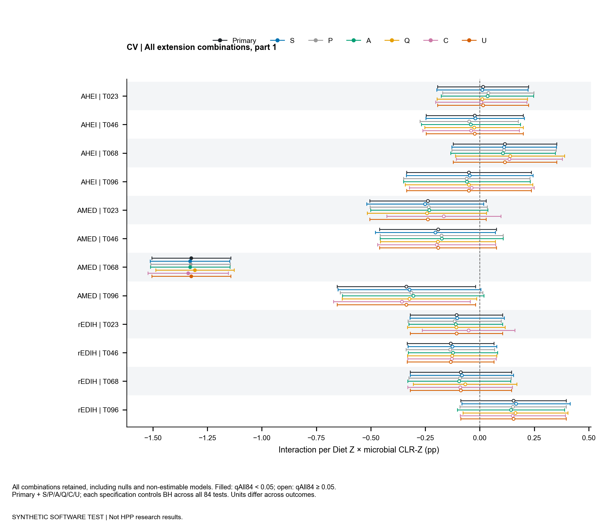
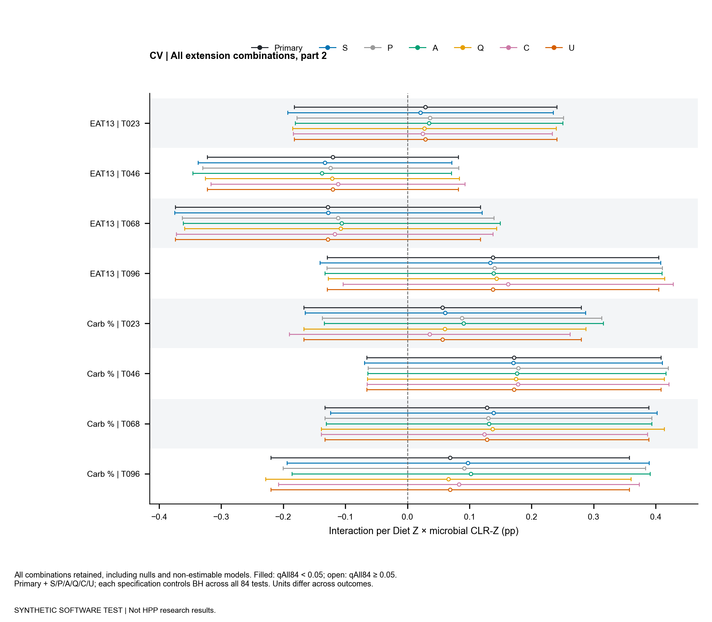
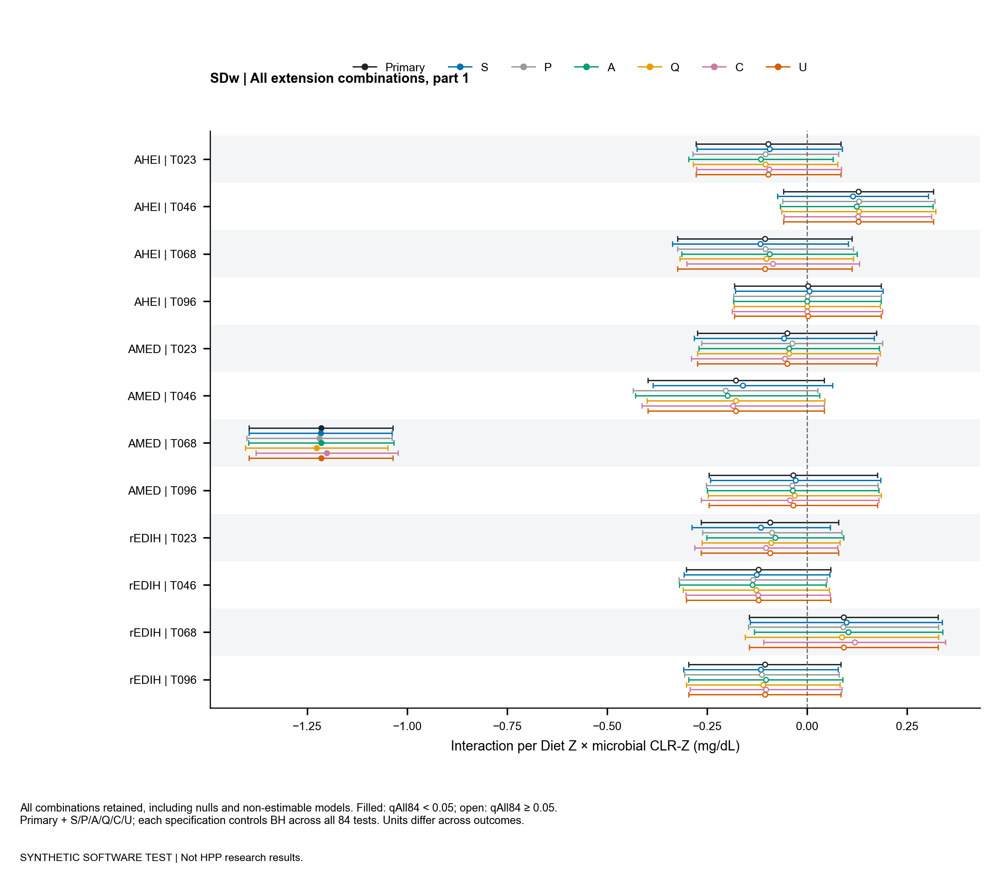
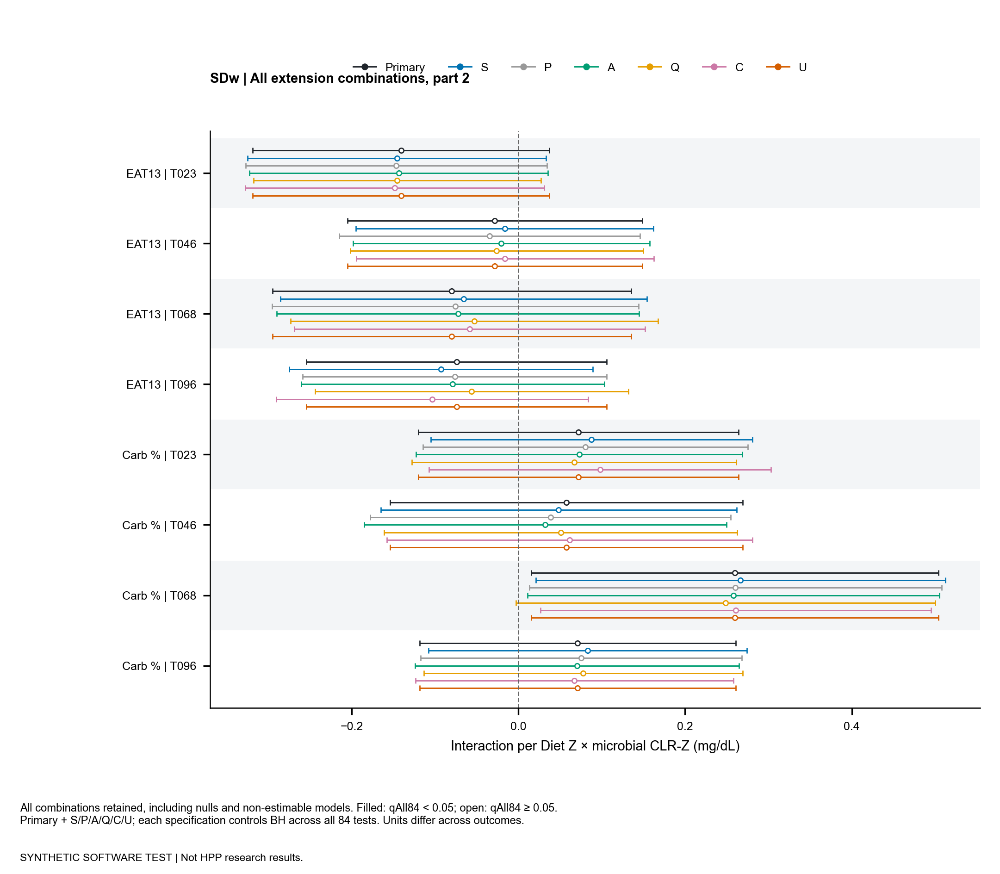

SYNTHETIC_TEST · 原显著扩展 2 项；六组均保留 2 项。各图和表均有可追溯汇总数据。
中英文结果与方法 · 英文图表说明 · Source Data口径
| exposure | taxon | outcome | n | unit | interaction_p | q_focus24 | q_all84 | double_iqr_beta_native | double_iqr_ci_low_native | double_iqr_ci_high_native | double_iqr_status | parameters | residual_df | covariates | condition_number | max_leverage | high_leverage_n | r2 | interaction_delta_r2 | support_min_tail_n | limited_joint_support | Beta [95% CI] |
|---|---|---|---|---|---|---|---|---|---|---|---|---|---|---|---|---|---|---|---|---|---|---|
| hPDI | T023 | Mean | 882 | mg/dL | 0.1249 | 0.7368 | 0.7729 | -0.6599 | -1.503 | 0.1834 | OK | 16 | 866 | age_years;sex;education_level;smoking_status;sleep_duration_hours_day;physical_activity_met_h_week;vitamin_use;hormone_use;bmi;cgm_device_type;alcohol_intake_g_day | 5.028 | 0.07782 | 21 | 0.01607 | 0.002214 | 48 | False | -0.367 [-0.836, 0.102] |
| hPDI | T023 | CV | 882 | percentage_points | 0.3982 | 0.9138 | 0.7729 | 0.2112 | -0.2793 | 0.7018 | OK | 16 | 866 | age_years;sex;education_level;smoking_status;sleep_duration_hours_day;physical_activity_met_h_week;vitamin_use;hormone_use;bmi;cgm_device_type;alcohol_intake_g_day | 5.028 | 0.07782 | 21 | 0.1328 | 0.001205 | 48 | False | 0.1175 [-0.1553, 0.3903] |
| hPDI | T023 | SDw | 882 | mg/dL | 0.8465 | 0.9596 | 0.9609 | 0.03083 | -0.2817 | 0.3434 | OK | 16 | 866 | age_years;sex;education_level;smoking_status;sleep_duration_hours_day;physical_activity_met_h_week;vitamin_use;hormone_use;bmi;cgm_device_type;alcohol_intake_g_day | 5.028 | 0.07782 | 21 | 0.1108 | 3.444e-05 | 48 | False | 0.01714 [-0.1567, 0.1909] |
| hPDI | T046 | Mean | 882 | mg/dL | 0.07352 | 0.5882 | 0.7478 | -0.8167 | -1.711 | 0.07792 | OK | 16 | 866 | age_years;sex;education_level;smoking_status;sleep_duration_hours_day;physical_activity_met_h_week;vitamin_use;hormone_use;bmi;cgm_device_type;alcohol_intake_g_day | 5.027 | 0.07726 | 25 | 0.01764 | 0.003342 | 48 | False | -0.4557 [-0.9548, 0.04348] |
| hPDI | T046 | CV | 882 | percentage_points | 0.5388 | 0.9138 | 0.8229 | 0.1561 | -0.3421 | 0.6543 | OK | 16 | 866 | age_years;sex;education_level;smoking_status;sleep_duration_hours_day;physical_activity_met_h_week;vitamin_use;hormone_use;bmi;cgm_device_type;alcohol_intake_g_day | 5.027 | 0.07726 | 25 | 0.132 | 0.0006484 | 48 | False | 0.0871 [-0.1909, 0.3651] |
| hPDI | T046 | SDw | 882 | mg/dL | 0.4635 | 0.9138 | 0.7729 | -0.1268 | -0.4661 | 0.2125 | OK | 16 | 866 | age_years;sex;education_level;smoking_status;sleep_duration_hours_day;physical_activity_met_h_week;vitamin_use;hormone_use;bmi;cgm_device_type;alcohol_intake_g_day | 5.027 | 0.07726 | 25 | 0.01052 | 0.0005742 | 48 | False | -0.07075 [-0.2601, 0.1186] |
| hPDI | T068 | Mean | 882 | mg/dL | 0.1975 | 0.7368 | 0.7729 | 0.7609 | -0.397 | 1.919 | OK | 16 | 866 | age_years;sex;education_level;smoking_status;sleep_duration_hours_day;physical_activity_met_h_week;vitamin_use;hormone_use;bmi;cgm_device_type;alcohol_intake_g_day | 5.026 | 0.09832 | 26 | 0.1025 | 0.0037 | 51 | False | 0.4468 [-0.2331, 1.127] |
| hPDI | T068 | CV | 882 | percentage_points | 0.4804 | 0.9138 | 0.776 | 0.1758 | -0.313 | 0.6646 | OK | 16 | 866 | age_years;sex;education_level;smoking_status;sleep_duration_hours_day;physical_activity_met_h_week;vitamin_use;hormone_use;bmi;cgm_device_type;alcohol_intake_g_day | 5.026 | 0.09832 | 26 | 0.1391 | 0.001049 | 51 | False | 0.1032 [-0.1838, 0.3902] |
| hPDI | T068 | SDw | 882 | mg/dL | 0.7731 | 0.9277 | 0.9146 | 0.05396 | -0.3132 | 0.4211 | OK | 16 | 866 | age_years;sex;education_level;smoking_status;sleep_duration_hours_day;physical_activity_met_h_week;vitamin_use;hormone_use;bmi;cgm_device_type;alcohol_intake_g_day | 5.026 | 0.09832 | 26 | 0.01167 | 0.0001326 | 51 | False | 0.03168 [-0.1839, 0.2473] |
| hPDI | T096 | Mean | 882 | mg/dL | 0.3891 | 0.9138 | 0.7729 | -0.3942 | -1.292 | 0.5036 | OK | 16 | 866 | age_years;sex;education_level;smoking_status;sleep_duration_hours_day;physical_activity_met_h_week;vitamin_use;hormone_use;bmi;cgm_device_type;alcohol_intake_g_day | 5.036 | 0.07783 | 23 | 0.01456 | 0.000769 | 54 | False | -0.2151 [-0.7049, 0.2748] |
| hPDI | T096 | CV | 882 | percentage_points | 1.311e-114 | 1.573e-113 | 5.505e-113 | -3.61 | -3.877 | -3.344 | OK | 16 | 866 | age_years;sex;education_level;smoking_status;sleep_duration_hours_day;physical_activity_met_h_week;vitamin_use;hormone_use;bmi;cgm_device_type;alcohol_intake_g_day | 5.036 | 0.07783 | 23 | 0.4741 | 0.3426 | 54 | False | -1.97 [-2.115, -1.825] |
| hPDI | T096 | SDw | 882 | mg/dL | 0.5712 | 0.9138 | 0.8567 | -0.09607 | -0.4289 | 0.2367 | OK | 16 | 866 | age_years;sex;education_level;smoking_status;sleep_duration_hours_day;physical_activity_met_h_week;vitamin_use;hormone_use;bmi;cgm_device_type;alcohol_intake_g_day | 5.036 | 0.07783 | 23 | 0.01052 | 0.0003256 | 54 | False | -0.05241 [-0.234, 0.1292] |
| NOVA4 | T023 | Mean | 882 | mg/dL | 0.5112 | 0.9138 | 0.7952 | 0.4721 | -0.9377 | 1.882 | OK | 16 | 866 | age_years;sex;education_level;smoking_status;sleep_duration_hours_day;physical_activity_met_h_week;vitamin_use;hormone_use;bmi;cgm_device_type;mean_daily_energy_kcal | 5.035 | 0.06077 | 15 | 0.09486 | 0.0009799 | 44 | False | 0.2478 [-0.4921, 0.9876] |
| NOVA4 | T023 | CV | 882 | percentage_points | 0.9615 | 0.9615 | 0.973 | 0.01106 | -0.4379 | 0.46 | OK | 16 | 866 | age_years;sex;education_level;smoking_status;sleep_duration_hours_day;physical_activity_met_h_week;vitamin_use;hormone_use;bmi;cgm_device_type;mean_daily_energy_kcal | 5.035 | 0.06077 | 15 | 0.01881 | 2.855e-06 | 44 | False | 0.005803 [-0.2298, 0.2414] |
| NOVA4 | T023 | SDw | 882 | mg/dL | 0.1716 | 0.7368 | 0.7729 | 0.2381 | -0.1035 | 0.5797 | OK | 16 | 866 | age_years;sex;education_level;smoking_status;sleep_duration_hours_day;physical_activity_met_h_week;vitamin_use;hormone_use;bmi;cgm_device_type;mean_daily_energy_kcal | 5.035 | 0.06077 | 15 | 0.2816 | 0.001777 | 44 | False | 0.125 [-0.05431, 0.3042] |
| NOVA4 | T046 | Mean | 882 | mg/dL | 0.7416 | 0.9277 | 0.906 | -0.2376 | -1.651 | 1.176 | OK | 16 | 866 | age_years;sex;education_level;smoking_status;sleep_duration_hours_day;physical_activity_met_h_week;vitamin_use;hormone_use;bmi;cgm_device_type;mean_daily_energy_kcal | 5.038 | 0.05946 | 18 | 0.09468 | 0.0002477 | 49 | False | -0.1251 [-0.8694, 0.6192] |
| NOVA4 | T046 | CV | 882 | percentage_points | 0.9482 | 0.9615 | 0.973 | 0.01611 | -0.4701 | 0.5023 | OK | 16 | 866 | age_years;sex;education_level;smoking_status;sleep_duration_hours_day;physical_activity_met_h_week;vitamin_use;hormone_use;bmi;cgm_device_type;mean_daily_energy_kcal | 5.038 | 0.05946 | 18 | 0.0183 | 6.048e-06 | 49 | False | 0.008483 [-0.2476, 0.2645] |
| NOVA4 | T046 | SDw | 882 | mg/dL | 0.6512 | 0.9277 | 0.8819 | 0.0917 | -0.3063 | 0.4897 | OK | 16 | 866 | age_years;sex;education_level;smoking_status;sleep_duration_hours_day;physical_activity_met_h_week;vitamin_use;hormone_use;bmi;cgm_device_type;mean_daily_energy_kcal | 5.038 | 0.05946 | 18 | 0.1905 | 0.0002631 | 49 | False | 0.04829 [-0.1613, 0.2579] |
| NOVA4 | T068 | Mean | 882 | mg/dL | 1.693e-210 | 4.062e-209 | 1.422e-208 | 9.513 | 9.067 | 9.958 | OK | 16 | 866 | age_years;sex;education_level;smoking_status;sleep_duration_hours_day;physical_activity_met_h_week;vitamin_use;hormone_use;bmi;cgm_device_type;mean_daily_energy_kcal | 5.035 | 0.07576 | 18 | 0.7069 | 0.5247 | 54 | False | 5.271 [5.024, 5.518] |
| NOVA4 | T068 | CV | 882 | percentage_points | 0.4693 | 0.9138 | 0.7729 | -0.1818 | -0.6746 | 0.311 | OK | 16 | 866 | age_years;sex;education_level;smoking_status;sleep_duration_hours_day;physical_activity_met_h_week;vitamin_use;hormone_use;bmi;cgm_device_type;mean_daily_energy_kcal | 5.035 | 0.07576 | 18 | 0.0257 | 0.001018 | 54 | False | -0.1007 [-0.3738, 0.1723] |
| NOVA4 | T068 | SDw | 882 | mg/dL | 0.8797 | 0.9596 | 0.973 | 0.03643 | -0.4357 | 0.5086 | OK | 16 | 866 | age_years;sex;education_level;smoking_status;sleep_duration_hours_day;physical_activity_met_h_week;vitamin_use;hormone_use;bmi;cgm_device_type;mean_daily_energy_kcal | 5.035 | 0.07576 | 18 | 0.1909 | 5.485e-05 | 54 | False | 0.02018 [-0.2414, 0.2818] |
| NOVA4 | T096 | Mean | 882 | mg/dL | 0.6655 | 0.9277 | 0.8819 | 0.2826 | -1 | 1.565 | OK | 16 | 866 | age_years;sex;education_level;smoking_status;sleep_duration_hours_day;physical_activity_met_h_week;vitamin_use;hormone_use;bmi;cgm_device_type;mean_daily_energy_kcal | 5.04 | 0.08569 | 15 | 0.09384 | 0.0003843 | 50 | False | 0.1455 [-0.5149, 0.8059] |
| NOVA4 | T096 | CV | 882 | percentage_points | 0.2149 | 0.7368 | 0.7729 | -0.3287 | -0.8486 | 0.1911 | OK | 16 | 866 | age_years;sex;education_level;smoking_status;sleep_duration_hours_day;physical_activity_met_h_week;vitamin_use;hormone_use;bmi;cgm_device_type;mean_daily_energy_kcal | 5.04 | 0.08569 | 15 | 0.02117 | 0.002762 | 50 | False | -0.1693 [-0.4369, 0.09841] |
| NOVA4 | T096 | SDw | 882 | mg/dL | 0.7464 | 0.9277 | 0.906 | -0.05728 | -0.4049 | 0.2903 | OK | 16 | 866 | age_years;sex;education_level;smoking_status;sleep_duration_hours_day;physical_activity_met_h_week;vitamin_use;hormone_use;bmi;cgm_device_type;mean_daily_energy_kcal | 5.04 | 0.08569 | 15 | 0.1907 | 0.0001126 | 50 | False | -0.02949 [-0.2085, 0.1495] |
| exposure | taxon | outcome | n | interaction_p | q_all84 | min_sensitivity_n | S qAll84 | P qAll84 | A qAll84 | Q qAll84 | C qAll84 | U qAll84 | same_direction_all_six | retained_sensitivity_count | retained_all_six | Beta [95% CI] |
|---|---|---|---|---|---|---|---|---|---|---|---|---|---|---|---|---|
| AMED | T068 | CV | 882 | 4.16e-42 | 1.165e-40 | 855 | 2.621e-40 | 5.239e-40 | 2.674e-40 | 5.191e-40 | 4.333e-40 | 1.165e-40 | True | 6 | True | -1.324 [-1.505, -1.143] |
| AMED | T068 | SDw | 882 | 8.682e-37 | 1.823e-35 | 855 | 1.31e-35 | 7.326e-35 | 9.524e-35 | 1.507e-36 | 2.537e-35 | 1.823e-35 | True | 6 | True | -1.215 [-1.395, -1.036] |
| model | extension_planned | extension_fitted | extension_q_all84_below_alpha | reference_hits | reference_hits_retained | new_significant_outside_reference | n_min | n_max | limited_support_tests |
|---|---|---|---|---|---|---|---|---|---|
| strict | 60 | 60 | 2 | 2 | 2 | 0 | 855 | 855 | 0 |
| protocol_same_sample | 60 | 60 | 2 | 2 | 2 | 0 | 867 | 867 | 0 |
| protocol_adjusted | 60 | 60 | 2 | 2 | 2 | 0 | 867 | 867 | 0 |
| quadratic | 60 | 60 | 2 | 2 | 2 | 0 | 882 | 882 | 0 |
| covariate_interactions | 60 | 60 | 2 | 2 | 2 | 0 | 882 | 882 | 0 |
| common_all7_sample | 60 | 60 | 2 | 2 | 2 | 0 | 882 | 882 | 0 |
| exposure | taxon | outcome | n | interaction_p | q_all84 | max_sensitivity_q_all84 | retained_sensitivity_count | Beta [95% CI] |
|---|---|---|---|---|---|---|---|---|
| AMED | T068 | CV | 882 | 4.16e-42 | 1.165e-40 | 5.239e-40 | 6 | -1.324 [-1.505, -1.143] |
| AMED | T068 | SDw | 882 | 8.682e-37 | 1.823e-35 | 9.524e-35 | 6 | -1.215 [-1.395, -1.036] |
PDF · Editable SVG · Source Data

PDF · Editable SVG · Source Data

PDF · Editable SVG · Source Data

PDF · Editable SVG · Source Data

PDF · Editable SVG · Source Data

PDF · Editable SVG · Source Data

PDF · Editable SVG · Source Data

PDF · Editable SVG · Source Data

PDF · Editable SVG · Source Data

PDF · Editable SVG · Source Data
